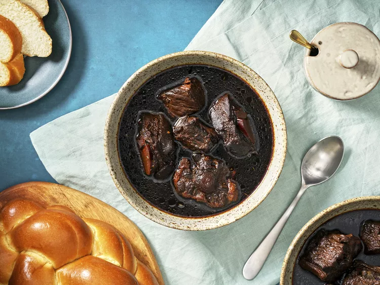

Guyanese Pepperpot

Description
Pepperpot, a national dish of Guyana, is a delightful meat-based stew, rich with braised beef and infused with cinnamon, clove, thyme, and wiri wiri peppers, a small red pepper that's native to Guyana and is prized for its bright and spicy punch. Although not traditional to many pepperpot recipes, this version calls for nutmeg for an added layer of spice complexity. Pepperpot is traditionally eaten on Christmas morning for breakfast alongside Guyanese plait bread, a braided white bread similar in appearance to challah but without the shiny egg-washed crust.
Ingredients
-
2 pounds (900g) cow foot, cut into roughly 1- by 2-inch pieces (see note)
-
2 teaspoons (8g) kosher salt, divided
-
2 1/2 teaspoons chicken bouillon, divided
-
1 1/4 cups (420ml) cassareep, divided
-
21 sprigs fresh thyme, divided
-
24 whole cloves, divided
-
3 cinnamon sticks (about 3 inches each), divided
-
1 pound (450g) oxtail with separated joints
-
1 pound (450g) bone-in beef chuck, cut into roughly 2-inch pieces (see note)
-
6 medium cloves garlic (about 25g), finely minced
-
4 fresh wiri wiri peppers (see note)
-
2 tablespoons (24g) light brown sugar
-
One 2 1/2–inch knob fresh ginger (about 30g), peeled and grated
-
1/2 of a whole nutmeg (2g), grated
-
One 1-inch strip orange peel, trimmed of excess white pith
Steps
-
Season cow foot all over with salt and 1/2 teaspoon chicken bouillon. In a stovetop pressure cooker or electric multicooker (such as an Instant Pot), combine cow foot with 1/2 cup cassareep, 7 sprigs thyme, 8 whole cloves, 1 cinnamon stick, and 4 cups water. Bring to high pressure and cook for 60 minutes. Depressurize the cooker using the rapid release valve, then transfer cow foot and cooking juices into a large pot or Dutch oven and set aside.
-
Season oxtail all over with salt and 1/2 teaspoon chicken bouillon. Using the same pressure cooker, combine oxtails with 1/2 cup cassareep, 7 sprigs thyme, 8 whole cloves, 1 cinnamon stick, and 2 cups water. Bring to high pressure and cook for 30 minutes. Depressurize the cooker using the rapid release valve, then transfer cooked oxtails and their cooking liquid into the pot with the cow foot.
-
Season beef chuck all over with salt and ½ teaspoon chicken bouillon. Using the same pressure cooker, combine beef chuck with 1/2 cup cassareep, 7 sprigs thyme, 8 whole cloves, 1 cinnamon stick, and 3 cups water. Bring to high pressure and cook for 30 minutes. Depressurize the cooker using the rapid release valve, then transfer cooked beef chuck and its cooking liquid into the pot with the cow foot and oxtails.
-
Add minced garlic, wiri wiri peppers (puncture one or two peppers with a knife first for extra chile heat), brown sugar, grated ginger, nutmeg, orange peel, and the remaining 1/4 cup cassareep and 1 teaspoon chicken bouillon to the pot and stir well. Bring to a simmer, then reduce heat to medium-low and cook for 15 minutes; the stew's sauce should be brothy but with body. Season with salt, if needed.
-
Remove from heat, then skim any fat from the surface. Serve with bread.